Kevin Johnson, Artistic Director PRESENTS
The Full Monty
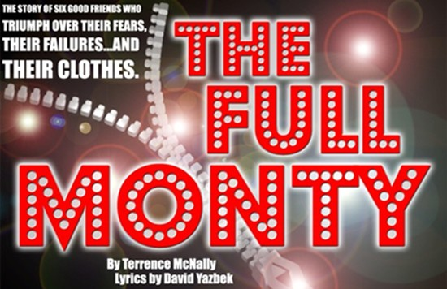
by Terrence McNally
Lyrics by David Yazbek
February 8-11, 16-18, 2007
at the Temple of Music and Art Main Stage
Director: Kevin Johnson
Music Director: Khris Dodge
Choreographer: Stacy Johnson
Lighting Design: Zach Ciaburri and Scot Gianelli
Sound Design: Mark Miceli
Costume Designer: Robin Sweet
Artistic Director: Kevin Johnson
CAST
Jay C. Cotner
Samuel Williams
Debbie Runge
Steve McKee
Michael Mendez
Elizabeth Cracchiolo
Kenton Jones
Joseph Topmiller
Kyle Harris
Marcus Terrell Smith
Janet Lynn Henderson
Kate Fitzgibbons
Martie van der Voort
Jessica Gillies
Aleksandar Panic
Chris Redondo
Christopher Violett
Jacqueline Rez
and
Rebekah Charles
Here's a preview from James Reel,
the theatre critic for the Tucson Weekly
Tucson Weekly
and a review from Kathleen Allen,
theatre critic for the Arizona Daily Star
Arizona Daily Star
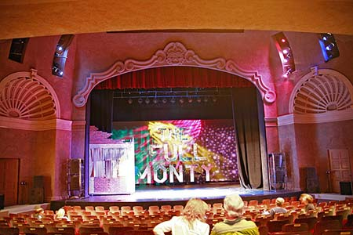
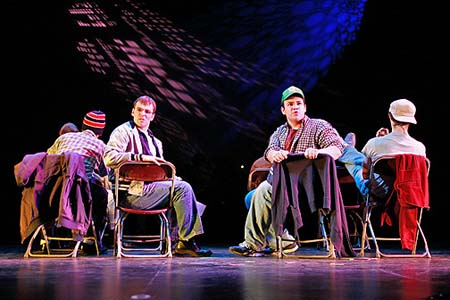
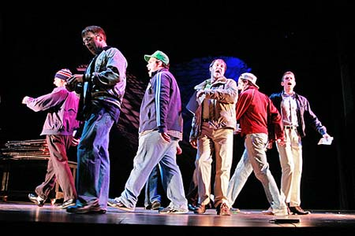
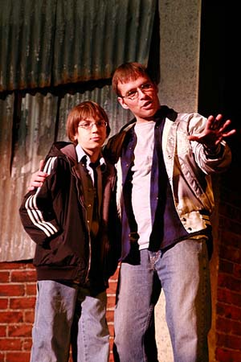
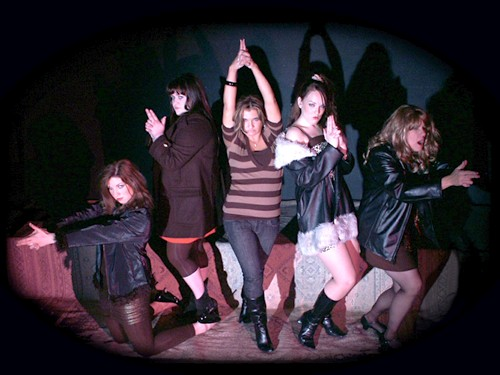
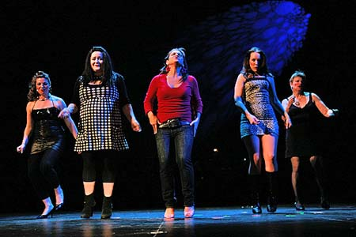
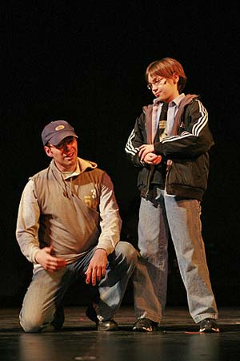
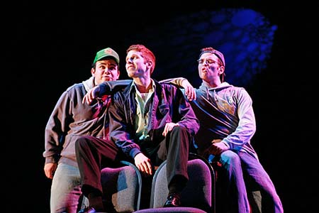
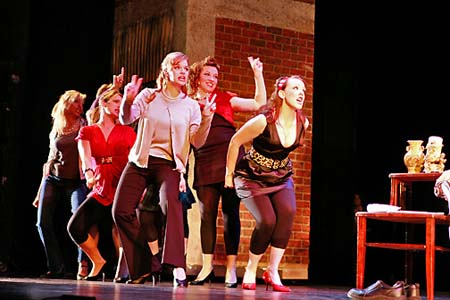
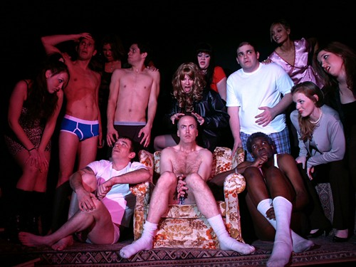
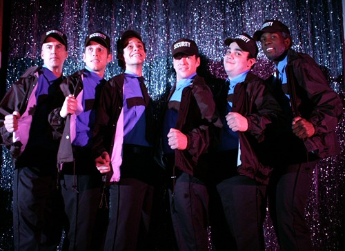
—"A winning ear-catching pop score by David Yazbek" New York Times
—"Wonderful, timely, intelligent tuneful singing" Entertainment Weekly